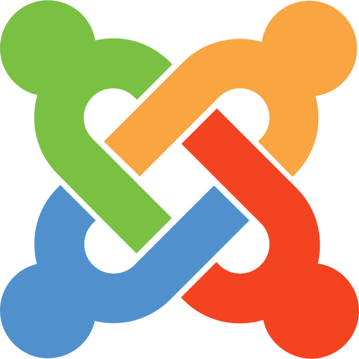
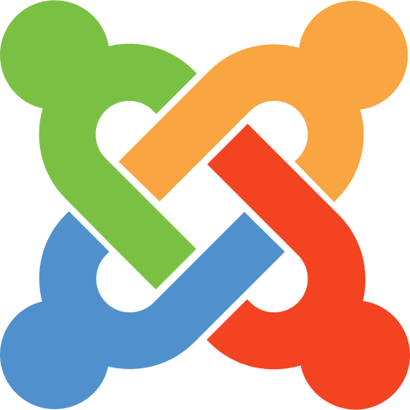

// Competenze
Master in Programmazione Web e Sviluppo Mobile
Master D, Spagna, 2024-2025
Ho acquisito competenze avanzate nello sviluppo web e mobile full stack, lavorando con tecnologie come HTML, CSS, JavaScript, PHP, SQL, React, Node.js, MongoDB e Flutter. Il master mi ha fornito una visione completa del ciclo di vita di un progetto digitale, dall’idea iniziale alla messa in produzione, integrando anche aspetti di intelligenza artificiale e mobile business.
Scrum Master
Master D, Spagna, 2025
Durante questo corso ho approfondito i principi dell’agilità e del framework Scrum, imparando a facilitare team di sviluppo, a gestire backlog e sprint e a ottimizzare la collaborazione tra stakeholder e sviluppatori. Ho acquisito le competenze necessarie per guidare progetti complessi verso risultati concreti e di valore.
Laurea in Amministrazione aziendale
UCA, Buenos Aires, Argentina, 2010-2013
Il corso mi ha fornito solide basi nella gestione aziendale, contabilità, finanza e strategia d’impresa. Ho sviluppato capacità analitiche e decisionali, fondamentali per comprendere i processi organizzativi e supportare la crescita sostenibile di aziende e progetti digitali.